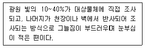
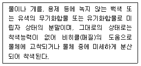
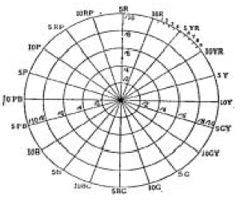

컬러리스트기사 (2005-03-06 기출문제)
1과목: 색채심리 마케팅
1. 색채의 사용에 있어서 심리학, 생리학, 조명학, 미학 등에 근거를 두고 과학적으로 선택하여 계획적인 색채를 사용하는 것은?
- 색채장식
- 색채선호
- 색채조절
- 색채대비
(정답률: 알수없음)

2. 상품의 마케팅 전략 중 핵심적인 요소로 등장하면서 제품의 패키지, 로고, 광고 등에 공통요소로 사용되는 기초적인 요소는?
- 색채
- 명도
- 채도
- 재질
(정답률: 알수없음)
3. 소비자 행동측면에서 살펴볼 때 국내기업이 라이센스 비용을 지불하면서도 외국기업의 유명 브랜드를 들여오는 것을 어떤 이유 때문일까?
- 일반적으로 소비자들이 유명하지 않은 상표보다는 유명한 상표에 자신의 충성도를 이전시킬 가능성이 높기때문임.
- 해외 브랜드는 소비자 마케팅이 수월하기 때문임.
- 국내 브랜드에는 라이센스의 다양한 종류가 없기 때문임.
- 외국 브랜드 이름에서 오는 이미지로 인해 소비자 행동이 이루어지기 때문임.
(정답률: 알수없음)
4. 다음의 색채 사용 사례 중 다른 세가지의 사례와 그 목적이 다른 것은 어느 것인가?
- 더운물과 찬물을 표시하기 위해 각각 빨간색 손잡이와 파란색 손잡이로 만들었다.
- 지하철 1호선은 빨간색, 2호선은 초록색으로 모든 표지판을 통일하였다.
- 경기에 참가하는 사람은 파란색 모자를, 관람객에게는 흰색 모자를 착용하도록 하였다.
- 장미꽃의 포장을 위해 분홍색 포장지와 분홍색 리본을 사용하였다.
(정답률: 알수없음)
5. 멀티미디어 디자인의 특징과 관련이 없는 것은?
- one-way communication
- user-centered design
- information architecture
- user interface
(정답률: 알수없음)
6. 다음 중 색채정보를 조사하기위해 사용되는 연구방법으로 거리가 먼 것은?
- 표본조사방법
- 현장관찰법
- 추리관찰법
- 패널조사법
(정답률: 알수없음)
7. 색채와 감정 관계에 관한 설명 중 맞는 것은?
- 녹색, 보라색 등은 따뜻함이나 차가움이 느껴지지 않는 중성색이다.
- 색의 중량감은 색상에 따라 가장 크게 좌우된다.
- 작업 능률과 관계있는 것은 색채 연상, 상징 작용이다.
- 중명도 이하에서 채도가 높은 색은 부드러운 느낌을 준다.
(정답률: 알수없음)
8. 다음 한국의 전통색 중 오간색으로만 짝지어진 것은?
- 녹색, 유황색, 홍색, 자색, 청색
- 벽색, 자색, 토황색, 흑홍, 주색
- 유황색, 자색, 벽색, 녹색, 홍색
- 비색, 자황색, 분홍색, 벽색, 흑홍
(정답률: 알수없음)
9. 설문작성 방법으로 올바르지 않는 것은?
- 각 질문은 문법적으로 정확한 어휘를 사용해야 한다.
- 전문용어나 복잡한 용어는 피해야 한다.
- 각각의 질문은 하나의 내용만 구체화해야 한다.
- 응답자의 전문지식이나 특정견해, 행동을 가정한 질문은 적절히 포함시켜 구성해야 한다.
(정답률: 알수없음)
10. 다음 중에서 일반적인 색채와 라이프 스타일의 특성을 가장 잘 설명한 것은?
- 여성들은 어두운 청색과 갈색을 통해 차분함을 추구한다.
- 빠른 속도감을 추구하는 스타일은 청색과 메탈릭 색을 추구한다.
- 색에 대한 일반적인 선호경향과 특정제품에 대한 선호색은 동일하다.
- 색채와 라이프 스타일의 관계는 사회 변화에 따라 끊임 없이 변화한다.
(정답률: 알수없음)
11. 브랜드 아이덴티티(BI)를 통한 마케팅으로 부적당한 것은?
- 브랜드에 관련된 이미지를 통합한다.
- 제품의 차별적 우위를 확보한다.
- 브랜드명은 고객 타겟(target)에 일치해야 한다.
- 홍보 마케팅 구상에 어려움이 없도록 보편성을 가져야한다.
(정답률: 알수없음)
12. 실내 색채 계획에 관한 다음의 설명 중 잘못된 것은?
- 먼저 주조색을 결정한 다음 그 색과 조화되는 보조색을 적절한 비율로 선택한다.
- 휴식 공간의 색채는 대비색상, 난색 계열, 강렬한 톤이 좋다.
- 명도와 채도를 그라데이션 기법으로 변화시켜 배색하면 리듬감이 생긴다.
- 밝은 색은 위로, 어두운 색은 아래로 배색하면 안정감이 있다.
(정답률: 알수없음)
13. 음양오행설에 의한 색채의 상징을 설명한 내용 중 틀린 것은?
- 청색 - 동쪽 - 목(木) - 인(仁)
- 적색 - 남쪽 - 화(火) - 예(禮)
- 황색 - 중앙 - 토(土) - 신(信)
- 백색 - 서쪽 - 수(水) - 지(知)
(정답률: 알수없음)
14. 바디 샵(Body shop)은 브랜드 이미지, 매장 디스플레이, 제품의 포장, 온라인 정보 등에 색채를 통한 그린 마케팅을 확실하게 부각시킨다. 여기에 사용된 색채 마케팅 전략 요인은?
- 사회 문화적 요인
- 인구 통계적 요인
- 기술적 요인
- 자연 환경적 요인
(정답률: 알수없음)
15. 조사하는 대상의 이미지를 나타내는 여러 쌍의 형용사 반대어 척도에 의해 평가하도록 한 후 이 사이의 상관 계수를 근거로 요인을 분석해서 근원적인 심리적 요소를 찾는 방법을 무엇이라 하는가?
- 오스굿(C.E.Osgoods)의 SD법
- 서스톤(Thurston)의 일대일 비교법
- 순위법
- 표본 추출법
(정답률: 알수없음)
16. 브랜드의 이미지 전략으로 올바른 것은?
- 은행과 보험회사의 신뢰성 있는 브랜드 색채이미지로는 노랑과 빨강이 적절하다.
- 브랜드의 차별적 우위는 기능과 기술에 의해 주로 결정된다.
- 제품의 이미지가 변하더라도 브랜드의 색채이미지는 일관성이 요구된다.
- 차별화된 브랜드의 색채 이미지 전략을 사용한 예로 코닥필름의 노랑과 후지필름의 녹색을 들 수 있다.
(정답률: 알수없음)
17. 그림을 그릴 때 일반적으로 나무의 잎은 초록색으로, 나무 기둥은 짙은 갈색으로 그리는 것은 대상의 표면에 대한 무의식적 추론에 의한 것이다. 이러한 색을 무슨 색이라고 하는가?
- 지각색
- 지시색
- 주관색
- 기억색
(정답률: 알수없음)
18. 몬드리안(Mondrian)의 '브로드웨이 부기우기'라는 작품에서 드러난 대표적인 색채 현상은?
- 착시
- 음성 잔상
- 항상성
- 색채와 소리의 공감각
(정답률: 알수없음)
19. 일반적으로 사용되는 시장세분화의 기준으로 지리적, 인구 통계적, 심리분석적, 행동분석적 변수들이 있는데 이 중 인구통계적 변수에 포함되지 않는 것은?
- 나이
- 가족규모
- 소득
- 상표 충성도
(정답률: 알수없음)
20. 프로그램과 프로그램 중간에 삽입되는 형식으로 방송하는 광고는 무엇인가?
- 스폿(spot)광고
- 블록(block)광고
- 스폰서쉽(sponsor ship)광고
- 네트워크(network)광고
(정답률: 알수없음)
2과목: 색채디자인
21. 디자인에 관한 다음 설명 중 적절하지 않은 것은?
- 디자인을 하기 위해서는 합목적성과 심미성, 경제성과 독창성을 충족시켜야 한다.
- 디자인을 하기 위해서는 생태학, 철학, 심리학, 생물학 등 폭넓은 분야에 대한 이해가 요구된다.
- 현대 디자인은 빠르게 변하는 정보사회의 요구에 부응하기 위해 관습적, 토속적 디자인 요소를 배제해야한다.
- 현대 디자인은 점차로 자연과의 '공생'과 '상생'이라는 측면에서 검토되어야 할 필요가 있다.
(정답률: 알수없음)
22. 제품 색채 계획 단계를 기획 단계 → 디자인 단계 → 생산단계로 분류할 수 있다. 다음 중 디자인 단계에 속하지 않는 것은?
- 이미지 방향 설정
- 색채분석, 색채계획서 작성
- 소재 및 재질 결정
- 제품계열별 분류 및 체계화
(정답률: 알수없음)
23. 색채를 활용한 브랜드 아이덴티티를 형성한 사례로 연결이 잘못된 것은?
- 후지필름 - 파랑
- 맥도널드 - M자의 노란 심볼과 빨간 바탕
- 코닥필름 - 노랑
- 코카콜라 - 빨강
(정답률: 알수없음)
24. 모든 디자인에서 대칭, 비대칭, 주도, 종속의 개념을 이용하여 시각적으로 안정감을 주기 위한 원리는?
- 통일의 원리
- 대비 조화의 원리
- 운동의 원리
- 균형의 원리
(정답률: 알수없음)
25. 디자인의 원리로만 짝지어진 것은?
- 반복(Repetition) - 조화(Harmony)
- 명암(Value) - 대비(Contrast)
- 통일(Unity) - 색채(Color)
- 크기(Size) - 형(Shape)
(정답률: 알수없음)
26. 컴퓨터그래픽에 대한 설명으로 틀린 것은?
- 다양한 색채표현 및 교체가 쉽다.
- 이미지의 복사 및 확대, 축소, 회전 등 변화가 쉽다.
- 여러 각도에서 본 그림을 나타낼 수 없다.
- 다양한 그림의 기억, 수정, 재사용이 용이하다.
(정답률: 알수없음)
27. 그린 디자인이란 무엇을 말하는가?
- 녹색의 제품이나 광고물의 디자인
- 생태학적으로 건강하고 친환경적인 디자인
- 캠핑용품 디자인
- 생물학적 원리를 이용한 디자인
(정답률: 알수없음)
28. 디자인의 조건 중 실용성 및 효용성에 속하는 것은?
- 합목적성
- 안전성
- 경제성
- 질서성
(정답률: 알수없음)
29. 디자인의 1차적 목적이 되는 것은?
- 생산성
- 기능성
- 심미성
- 가변성
(정답률: 알수없음)
30. 소매점의 점포, 점두에 사용하는 광고 메세지로, 구매자는 물론 통행인의 구매행위에 영향을 주는 것은?
- CIP
- POP
- PHP
- CSS
(정답률: 알수없음)
31. 1930년대 미국의 1세대 공업디자이너와 관계없는 사람은?
- 레이먼드 로위
- 허버트 리드
- 헨리 드레이퍼스
- 노먼 벨 게데스
(정답률: 알수없음)
32. 다음 중 디스플레이(Display)에 대한 설명으로 틀린 것은?
- 놀이 공간의 효과적인 배치를 위한 계획을 말한다.
- 커뮤니케이션 수단으로 그 의미가 확대되고 있다.
- 사람의 시선을 유도하는 강력한 이미지를 전달하는 표현기술이다.
- 상품의 가치를 표현하는 기술적인 연출이다.
(정답률: 알수없음)
33. 외계로부터의 자극을 받아들여 행동의 계기가 되는 작용을 무엇이라고 하는가?
- 감각(sensation)
- 지각(perception)
- 적응(adaption)
- 인지(cognition)
(정답률: 알수없음)
34. 색채를 표현의 도구 뿐 아니라 주제의 이미지로도 삼은 디자인 사조는?
- 다다이즘(Dadaism)
- 야수파(Fauvism)
- 큐비즘(Qubism)
- 아르누보(Art Nouveau)
(정답률: 알수없음)
35. 다음 중 생태학적으로 건강하고 유기적 전체에 통합하는 인간환경의 구축을 궁극적 목표로 삼는 디자인 요건은?
- 합리성
- 질서성
- 친자연성
- 문화성
(정답률: 알수없음)
36. 1915년부터 1923년까지 유럽전역으로 확산된 전통과 상식의 한계에 대한 반항적 비판과 은유로 대변되는 예술운동으로, 어둡고 칙칙한 톤의 색채를 주로 사용한 예술사조는?
- 다다이즘(Dadaism)
- 아방가르드(Avant-garde)
- 미래주의(Futurism)
- 아르데코(Artdeco)
(정답률: 알수없음)
37. 다음 배색 중 병원의 신생아실을 위한 색채 기획 중 밝고, 조용하고 부드러운 느낌을 주는 배색으로 가장 적절한 것은? (단, 색채 기호는 모두 먼셀기호이다.)
- 주조색 : 5Y 9.0/2.0, 보조색 : 2.5YR 8.0/3.0, 강조색 : 5B 5.0/2.0
- 주조색 : 5R 5.0/12.0, 보조색 : 2.5RP 8.0/3.0, 강조색 : 5PB 5.0/6.0
- 주조색 : 5G 3.0/4.0, 보조색 : 5G 9.0/2.0, 강조색 : 5Y 5.0/6.0
- 주조색 : 5P 6.0/5.0, 보조색 : 5P 8.0/3.0, 강조색 : 2.5YR 8.0/2.0
(정답률: 알수없음)
38. 다음 유행색에 대한 설명 중 맞는 것은?
- 패션이나 미용디자인에 사용되는 색 영역은 비교적 느리게 변한다.
- 당시의 특정한 정치·경제적인 사건의 영향을 가장 많이 받는다.
- 국제 유행색 협회에서 매년 그 해의 색채방향을 분석하고 유행색을 예측한다.
- 어떤 계절이나 일정기간 동안 특별히 많은 사람들이 선호하여 착용한 색을 일컫기도 한다.
(정답률: 알수없음)
39. 한국산업규격의 안전색채 사용이 정해진 적용 범위에 해당 되지 않는 것은?
- 사업장 - 공장, 광산, 건설 작업장, 학교
- 공공장소 - 역, 도로, 부두, 공항
- 교통기관 - 차량, 선박, 항공기
- 레져시설 - 리조트호텔, 스포츠센터
(정답률: 알수없음)
40. 실내디자인을 설명하는 것으로 틀린 것은?
- 건물의 내부에서 사람과 물체와 공간의 관계를 다루는 디자인이다.
- 인간 기본생활에 밀접한 부분인 만큼 인간적 스케일로 취급되어야 한다.
- 선박, 자동차, 기차, 여객기 등의 운송기기 내부를 다루는 특별한 영역도 포함된다.
- 건축물의 실내를 구조의 주체와 분리하여 내장한다는 의미를 지닌다.
(정답률: 알수없음)
3과목: 색채관리
41. 다음이 설명하는 조명방식은 무엇인가?

- 반직접조명
- 반간접조명
- 간접조명
- 전반확산조명
(정답률: 알수없음)
42. 다음 중 안료를 이용하여 채색하기에 가장 적당하지 않은 경우는?
- 자동차의 내장 및 외장의 표면코팅
- 직물의 염색
- 유성 및 수성페인트
- 금속판에 사용하는 인쇄용 잉크
(정답률: 알수없음)
43. 육안으로 채도가 강한 색채를 오래 관측하다가 새로운 색채시료를 관측하면 관측했던 색상의 보색 방향으로 잔상이 나타나 다르게 보일 때 색채 관측시 가장 좋은 방법은?
- 회색을 장시간 응시하거나 눈을 감고 잔상이 사라질 때까지 기다린다.
- 보색이 되는 색을 2∼3분 바라본다.
- 동일 색상의 채도가 낮은 색을 응시한다.
- 동일 채도의 보색 색상을 약 5분간 응시한 다음 흰색을 바라본다.
(정답률: 알수없음)
44. 색채 측정 방법 중 필터식 색채계에 대한 설명으로 옳지 않은 것은?
- 색채를 생산하는 현장에서 색채를 관리하는데 효율적이다.
- 기준이 되는 색채와의 비교 평가에 따른 품질관리가 용이하다.
- 조건등색이나 색료의 변화에 따른 근본적인 문제점에는 대응할 수 없는 한계점이 있다.
- 색채 처방을 산출하기 위한 자동배색에 사용될 수 있는 측정데이터를 직접 활용하는데 주로 사용된다.
(정답률: 알수없음)
45. 측색을 실시할 경우에 유의사항 중 맞는 것은?
- 측색을 실시할 경우 대상 물체와의 거리가 멀어야한다.
- 측색기는 가능한 수직을 유지하고 휴대용 형태의 측색기를 사용할 것을 권장한다.
- 측색 전에는 반드시 백색과 검은색 교정판을 모두 사용하여 측색기를 교정 해야 한다.
- 자연물을 측색하는 경우 표면이 일정하므로 측색하려는 부위의 색채가 포함될 필요는 없다.
(정답률: 알수없음)
46. 사진, 로고 등의 이미지를 읽어 컴퓨터에서 편집 및 조작가능한 디지털 파일로 저장하는 전자장치는?
- 스크린카운터
- 스캐너
- 잉크제트프린터
- 스팩크린
(정답률: 알수없음)
47. 이 색료는 자외선(380nm 미만)을 흡수하고 가시파장영역으로 이를 방출하므로(비가시광선을 가시광선으로의 전환에 의해), 사람의 눈에 흰색보다 더 희게 보이게 할 수 있다. 이 색료는 무엇인가?
- 형광색료
- 금속박편
- 진주광택 박편
- 열변색 색료
(정답률: 알수없음)
48. L＊a＊b＊ 색표계에 대한 설명으로 틀린 것은?
- L＊은 인간의 시감과 같은 명도를 나타낸다.
- a＊는 Yellow∼Red의 대응 관계를 나타낸다.
- b＊는 Yellow∼Blue의 대응 관계를 나타낸다.
- 이 색표계는 조색을 하거나 색채의 오차를 알기 쉬워 색채의 변환 방향을 쉽게 짐작할 수 있다.
(정답률: 알수없음)
49. 색료들의 혼합에 있어 색영역은 이론적인 것으로부터 현실적인 단계로 내려 올수록 축소된다. 색영역의 축소에 영향을 주는 조건(여건)과 가장 거리가 먼 것은?
- 모든 색채는 단색광의 색좌표로 주어지는 색영역안에 놓이게 되는 한계
- 모든 색재료가 형광을 띠는 색료의 한계
- 경제성에 의한 한계
- 실질적으로 존재하는 색료에 의한 색영역의 한계
(정답률: 알수없음)
50. 형광등 아래에서는 똑같은 두가지의 색이 백열등 아래로 가져가면 아주 다른 색으로 보이는 경우가 있는데, 이같은 것은 그 물체색의 무엇이 다르기 때문인가?
- 분광분포(파장분포)
- 감마값
- 수분
- 큐비즘
(정답률: 알수없음)
51. 어떤 색채가 매체, 주변 색, 광원, 조도 등이 서로 다른 환경하에서 관찰될 때 다르게 보여지는 현상을 해결할 수 있도록 개발된 색채 이론 체계는?
- 디바이스 종속 색체계
- 색영역 맵핑
- 컬러 어피어런스 모델
- 디바이스의 특성화
(정답률: 알수없음)
52. 기준광으로 조명했을 때에 같은 색인 2개의 시료를 시험광으로 조명했을 때 발생하는 색차를 알려주는 지수를 무엇이라 하는가?
- 색온도(color temperature) 지수
- 연색평가지수(color rendering index)
- 메타메리즘 지수(metamerism index)
- 색변이 지수(color inconsistency index)
(정답률: 알수없음)
53. 다음은 안료에 대하여 설명한 것이다. 틀린 것은?
- 일반적으로 유기안료는 무기안료에 비해 착색력, 채도, 투명도가 우수하다.
- 안료는 채색 후에 물이나 습기에 노출되더라도 색을 보존해야 하기 때문에 물에 용해되지 말아야 한다.
- 자연에서 쉽게 볼 수 있는 천연안료는 모두 암석에서 채취한 것으로서 유기물에 의해 생성되므로 내광성이 우수하다.
- 안료의 색은 분자구조에 의한 선택적인 흡수 뿐만아니라 안료분자가 규칙적으로 배열되어 층을 이루기 때문에 빛의 회절에 의해 나타나기도 한다.
(정답률: 알수없음)
54. 해상도(解像度, resolution)에 대한 설명으로 맞는 것은?
- 일반적으로 모니터가 고해상도일수록 선명한 색채 영상을 제공한다.
- 모니터의 크기에 상관없이 동일한 해상도에서 선명도는 일정하게 유지된다.
- 최고 해상도를 가지고 있는 컴퓨터의 디스플레이 시스템에서는 그보다 낮은 해상도를 지원하지 않는다.
- 프린터의 해상도는 ppi(pixels per inch) 단위로 측정해야 한다.
(정답률: 알수없음)
55. 작은 CMYK 하프톤 점들을 사용하여 세부 이미지를 표현할 수 있는 방법으로 점들의 크기보다는 수를 변화시켜 색조 변화를 얻을 수 있는 방법은?
- 프리퀀시 모듈(FM) 스크리닝
- 슈퍼샘플링
- 매트릭스
- 세컨드 오리지날
(정답률: 알수없음)
56. 다음은 어떤 색채에 대한 설명인가?

- 염료
- 안료
- 페인트
- 수지
(정답률: 알수없음)
57. 분광식 색채계에 대한 설명으로 옳지 않은 것은?
- 비교적 정밀한 색채 측정이 요구 될 때 사용된다.
- 자동배색 장치의 색 측정 장치로 사용된다.
- 다양한 광원과 시야에서의 색채값을 동시에 산출해낼 수 있다.
- 측정된 색채값을 전산장치로 표현하지 못하는 단점이 있다.
(정답률: 알수없음)
58. 육안검색 측정 환경에 대한 설명으로 옳은 것은?
- 조명의 부스를 사용하는 경우 무광택의 N5∼8인 무채색이어야 한다.
- 비교되는 색은 일정 거리를 유지하고 동일 평면에 놓이지 않게 유의한다.
- 높은 채도에서 낮은 채도의 순서로 검사하는 것이 바람직하다.
- 자연광을 이용하는 경우 하루 중 어느 때라도 상관없다.
(정답률: 알수없음)
59. 한국산업규격(KS A 3511) 형광 안전 색채 사용 통칙에 준하여 형광빨강의 표시사항이 아닌 것은?
- 고도의 위험
- 방화
- 정지
- 피난
(정답률: 알수없음)
60. 색채 측정 결과에 반드시 기록해야 할 필요가 없는 것은?
- 색채 측정 방식
- N회 측정한 전체 측정값
- 표준 관측자
- 표준광의 종류
(정답률: 알수없음)
4과목: 색채지각론
61. 색채의 온도감에 가장 영향이 큰 색채 속성은 무엇인가?
- 채도
- 명도
- 색상
- 톤
(정답률: 알수없음)
62. 물체색을 일으키는데 필요한 것이 아닌 것은?
- 광원
- 물체에서의 반사
- 눈
- 필터
(정답률: 알수없음)
63. 눈에서 렌즈의 구실을 하며 물체의 위치에 따라 초점거리를 조절하여 상을 맺게 하는 부분은?
- 각막
- 수정체
- 망막
- 홍채
(정답률: 알수없음)
64. 의상실에 가서 color index 를 보고 옷감을 골랐더니 완성 후 색상이 뚜렷이 달랐다. 달라진 가장 큰 이유는?
- 면적 대비
- 보색 대비
- 베졸드 효과
- 동시 대비
(정답률: 알수없음)
65. 낮에는 빨간 꽃이 잘 보이다가 밤에는 파란 꽃이 더 잘 보이는 현상과 관계없는 것은?
- 체코의 생리학자인 푸르킨예가 발견하였다.
- 시각기제가 추상체시로부터 간상체시로의 이동이다.
- 추상체에 의한 순응이 간상체에 의한 순응보다 느리기 때문이다
- 간상체 시각과 추상체 시각의 스펙트럼 민감도가 다르기 때문이다.
(정답률: 알수없음)
66. 스펙트럼의 3원색을 겹쳤을 때 백색(백색광)이 만들어지는 것은 무슨 혼색인가?
- 감법혼색
- 가법혼색
- 병치혼색
- 동화혼색
(정답률: 알수없음)
67. 다음 중 경영색에 대한 설명은?
- 거울에 비친 사물이 거울의 뒷면에 있다고 지각되면서 동시에 좌우가 대칭되는 색
- 부드럽고 미적인 상태를 나타내는 색
- 투명하거나 반투명 상태의 색
- 여러 조명기구의 광원에서 보이는 색
(정답률: 알수없음)
68. 무대에서 하얀 발레복을 입은 무용수에게 빨간(Red) 조명과 녹색(Green)조명이 동시에 투사되면 발레복은 무슨 색으로 나타나는가?
- 주황
- 노랑
- 파랑
- 보라
(정답률: 알수없음)
69. 노트르담 대성당의 스테인 그래스 제작기법을 보면, 원색으로 이루어진 바탕그림사이에 검은색 띠를 두른 것을 발견하게 되는데 이는 어떤 대비를 약화시키려는 시각적 보정작업인가?
- 색상대비
- 연변대비
- 명도대비
- 한난대비
(정답률: 알수없음)
70. 다음 내용 중 가장 타당성이 높은 것은?
- 저학년 아동들을 위한 놀이 공간에 밝은 회색을 사용 하였다.
- 여름이 되어 실내 가구, 소파를 밝은 주황색으로 바꾸었다.
- 고학년 아동들을 위한 학습공간에 연한 파란색을 사용 하였다.
- 레스토랑에 식욕을 돋구기 위해 밝은 녹색을 사용 하였다.
(정답률: 알수없음)
71. 원색에 관한 설명으로 틀린 것은?
- 색광의 3원색은 빨강, 녹색, 파랑이다.
- 색료의 3원색은 마젠타, 노랑, 시안이다.
- 원색은 특정한 다른 색을 혼합하여 만들어 낼 수 있다.
- 원색들을 혼합하여 다른 색을 다양하게 만들어 낼 수있다.
(정답률: 알수없음)
72. 두 색이 상반된 성격을 띠고 있는 경우에는 강한 대비효과를 만들어 눈부심을 만들어 보이는데, 다음 중 이러한 눈부심 효과(glare effect)가 가장 큰 대비는?
- 채도대비
- 색상대비
- 연변대비
- 계시대비
(정답률: 알수없음)
73. 컬러 프린터의 잉크는 아래와 같이 네 종류가 있다. 이중 감법혼색의 원색이 아닌 것은?
- 마젠타
- 시안
- 노랑
- 검정
(정답률: 알수없음)
74. 색각 이상에 대한 다음 설명 중 틀린 것은?
- 2색형 색각자를 부분 색맹이라고 한다.
- 정상시각의 관측자를 3색형 색각자라고 한다.
- 남성보다 여성의 경우 색맹의 비율이 더 높다.
- 색맹은 유전이다.
(정답률: 알수없음)
75. 물체의 색은 무엇에 의해 결정되는가?
- 표면의 굴절률
- 표면의 반사율
- 굴절되는 빛의 양
- 흡수되는 빛의 양
(정답률: 알수없음)
76. 동일한 색을 채도가 낮은 바탕에 놓았을 때는 선명해 보이고, 채도가 높은 바탕에 놓았을 때는 탁해 보이는 것은 무슨 대비현상 때문인가?
- 색상대비
- 채도대비
- 명도대비
- 보색대비
(정답률: 알수없음)
77. 색의 혼합에 대한 설명으로 맞는 것은?
- 색채사진의 필름이나 인화지는 가법혼색이다.
- 컬러인쇄의 색 분해에 의한 네거티브 필름은 가법혼색이다.
- 컬러 TV, 스포트 라이트는 감법혼색이다.
- 수성페인트, 포스터칼라의 혼합은 가법혼색이다.
(정답률: 알수없음)
78. 색의 감정적 효과에 영향을 미치는 요소를 나열한 것으로 연결이 잘못된 것은?
- 온도감 - 색상
- 중량감 - 명도
- 흥분과 침정 - 명도
- 화려함과 수수함 - 채도
(정답률: 알수없음)
79. 망점으로 인쇄되는 컬러 인쇄물에 응용된 색채혼색은?
- 감법혼색
- 병치혼색
- 가법혼색과 병치혼색
- 감법혼색과 병치혼색
(정답률: 알수없음)
80. 다음 중 냉·난감 어느 쪽에도 기울지 않는 색은?
- 녹색, 보라
- 노랑, 주황
- 파랑, 녹색
- 보라, 검정
(정답률: 알수없음)
5과목: 색채체계론
81. 광물에서 유래한 색명이 아닌 것은?
- Chrome Yellow
- Emerald Green
- Prussian Blue
- Cobalt Blue
(정답률: 알수없음)
82. 색채조화를 설명한 것 중 바른 것은?
- 조화는 서로 다른 것들이 대립하면서도 통일된 인상을 주는 미적원리이다.
- 문리적 개념과 관련한 일종의 사회원리이다.
- 음악이나 조형과는 달리 색채만의 주관적이고 감각적 결합방법을 말한다.
- 색채조화란 개인의 주관적 감성과 시각현상이 가장 먼저 고려되어야 한다.
(정답률: 알수없음)
83. 색채조화이론과 이를 주장한 사람의 연결이 틀린 것은?
- 루드 (N.O. Rood) : 자연관찰에서 일정한 법칙을 찾아내어, 황색에 가까운 것은 밝고, 먼 것은 어둡다고 하는 조화이론을 밝혔다.
- 슈브롤 (M.E. Chevreul) : 동시대비 원리, 도미넌트 칼라, 세퍼레이션 칼라, 보색배색 조화 등의 법칙을 저술했다.
- 저드 (D.B.Judd) : 색채조화는 좋아함과 싫어함의 문제이며, 정서반응은 사람에 따라 다르고, 동일인이라도 때에 따라 다르다.
- 비렌(F.Birren) : 조화란 질서라 정의하고, 영상, 컴퓨터 모니터, 웹칼라 등에 적합한 이론을 발표하였다.
(정답률: 알수없음)
84. 오스트발트 색채체계의 기본구조에 관한 설명이 아닌 것은?
- 24색상환을 사용한다.
- 색상환의 반대에 위치한 색은 서로 보색관계이다.
- 헤링의 4원색 이론을 기본으로 하고 있다.
- 색입체의 아래에 흰색을 배치하고 위에 검정을 둔다.
(정답률: 알수없음)
85. DIN과 관련하여 설명된 색채 특성 중 옳은 것은?
- 색상은 40개로 설계되었다.
- T, S, D 의 3단위로 표시한다.
- 색상은 빨강이 1번으로 기준이다.
- 원래 채도는 10단계로 설계되었다.
(정답률: 알수없음)
86. DIN 색체계의 2:6:1 이 나타내는 색상은?
- 2번 색상의 어둔정도 6, 포화도 1
- 2번 색상의 포화도 6, 어둔정도 1
- 포화도 2, 어둔정도 6, 1번 색상
- 어둔정도 2, 포화도 6, 1번 색상
(정답률: 알수없음)
87. CIE 표색계에서 백색광은 어느 위치에 있게 되는가?
- 왼쪽
- 오른쪽
- 가운데
- 상단
(정답률: 알수없음)
88. 다음 그림에 관한 설명 중 맞는 것은?

- 기본 5색상은 10R, 10Y, 10G, 10B, 10P로 각 색상의 표준색상이다.
- 등명도로 구성되어 있다.
- 모든 색의 순색은 채도가 10이다.
- 색입체를 수직으로 절단한 배열이다.
(정답률: 알수없음)
89. 우리의 음양오행사상에 의한 색체계는 오방정색과 오방간색으로 분류하는데 다음 중 오방간색이 아닌 것은?
- 청색
- 홍색
- 유황색
- 자색
(정답률: 알수없음)
90. 오스트발트 표색계의 장·단점 중 옳은 것은?
- 색입체가 비대칭성을 가지고 있다.
- 계열색을 찾기가 어렵다.
- 자연색에 기초를 두고 만들었다.
- 동색조를 찾고자할 때 편리하다.
(정답률: 알수없음)
91. 먼셀 색체계의 속성에 관한 설명 중 틀린 것은?
- 명도는 이상적인 흑색을 0, 이상적인 백색을 10으로 하여 구성하였다.
- 채도는 무채색을 0으로 하여 색상의 가장 순수한 채도 값이 최대가 된다.
- 표기방법은 색상, 명도/채도의 순이다.
- 빨강, 노랑, 파랑, 녹색의 4가지 색상을 기본색으로 한다.
(정답률: 알수없음)
92. 각 색의 잔상들이 그 색의 실제 이미지들을 더 강화하여 저마다의 독특한 특성을 드러내도록 하는 배색 방법은?
- 보색에 의한 배색
- 색상에 의한 배색
- 명도에 의한 배색
- 유사에 의한 배색
(정답률: 알수없음)
93. 오스트발트 표색계의 설명 중 맞는 것은?
- 오스트발트 색입체의 모양은 원통형을 하고 있다.
- 유채색의 표기는 백색량, 흑색량, 색상기호의 순으로 하고 있다.
- 같은 기호의 색일지라도 명도나 채도가 모두 일치하지 않는 결점이 있다.
- 색의 삼속성에 따른 지각적인 등보도성을 가진 체계적인 배열을 하고 있다.
(정답률: 알수없음)
94. 색채 표준화를 계획할 때 우선 고려되어야 할 조건 중 맞는 것은?
- 이상적인 체계를 구성해야 한다.
- 지각적인 규칙보다는 정량적인 단계가 우선한다.
- 배열이 규칙적이어야 한다.
- 형광색과 특수 안료의 색채를 포함해야 한다.
(정답률: 알수없음)
95. 다음은 먼셀 표색계의 색표시 방법에 따라 표시한 유채색 들이다. 이 중 명도가 같은 색으로 구성된 쌍은?
- 5Y 8/10, 10G 8/4
- 7.5RP 5/8, 7.5RP 4/4
- 5Y 7/6, 5PB 6/6
- 10G 8/4, 10G 6/4
(정답률: 알수없음)
96. 오스트발트 색체계의 특성으로 옳지 않은 것은?
- 24색상으로 구성되어 1 ‾24의 숫자로도 표기한다.
- 총 10단계의 어둡기 단위 중 8개만 재현 가능한 영역이다.
- 베버와 페히너의 감각상수 보다는 정량적인 규칙이 우선되었다.
- 8개의 색상명으로 색상이 구성되었다.
(정답률: 알수없음)
97. 문·스펜서 색채 조화론의 미도를 계산하기 위해 필요한 값이 아닌 것은?
- 밸런스 포인트(Balance Point)
- 미적 계수(Aesthetic Factor)
- 질서성의 요소(Element of Order)
- 복잡성의 요소(Element of Complexity)
(정답률: 알수없음)
98. 오정색의 상징과 오음계가 바르게 연결된 것은?
- 청색 - 동쪽 - 각
- 백색 - 서쪽 - 궁
- 적색 - 중앙 - 치
- 흑색 - 북쪽 - 상
(정답률: 알수없음)
99. 문·스펜서 조화론에서 분류하는 조화가 아닌 것은?
- 동등조화
- 이색조화
- 대비조화
- 유사조화
(정답률: 알수없음)
100. 자연에서 볼 수 있는 일출이나 일몰과 같이 여러 가지 색들 가운데 한 가지의 색이 중심을 이룰 때 얻어지는 조화는?
- 색상에 따른 조화
- 명도에 따른 조화
- 주조색에 따른 조화
- 보색대비에 따른 조화
(정답률: 알수없음)